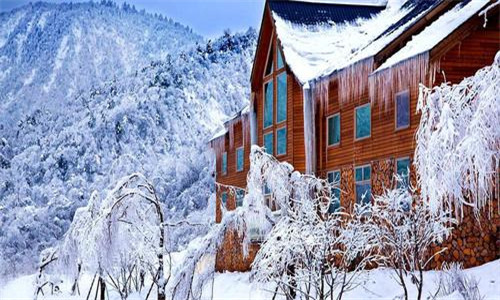

morly旅游网
西岭雪山位于四川省成都市大邑县境内，距成都仅95公里，总面积375平方公里，属世界自然遗产、大熊猫栖息地、AAAA级旅游景区、国家重点风景名胜区。景区内最高峰庙基岭海拔5364米，是成都第一峰，矗立天际，终年积雪。在阳光照射下，洁白晶莹，银光灿烂，秀美壮观。唐代大诗人杜甫盛赞此景，写下了“窗含西岭千秋雪，门泊东吴万里船”的绝句。西岭雪山也因此得名。
西岭雪山据清光绪（1875）《大邑县志》记载雪山俗名大雪塘，在县境西北中山后，冬季积雪如银，周围可数百里，三面皆壁立千仞，唯一面岛道可婉延登绝顶，中有清水一池（九龙池）四时不溢不涸，登上若大声呼叫，冰雹立至，其附面斯山，留有铜矿山，小西天，大仙峰，二仙峰，南天门，城门洞，鸳鸯池、红蛛池等诸名胜，其中所示诸山，均为景区山脉，而此处大雪塘便为景区最高峰，也有成都第一峰之称，海拔5364米，
西岭雪山属立体气温带，现已形成“春赏杜鹃夏避暑，秋观红叶冬滑雪”的四季旅游格局。春天山花烂漫，杜鹃成林，珙桐花开如鸽子飞翔，三十多个品种的杜鹃延绵数十里，每年4至8月随高差的不同先后开放，漫山遍野，仿若花的海洋；夏天气候凉爽，绿草茵茵，最高气温不超过25摄氏度，是成都近郊避暑、度假、商务会议的首选之地。秋天万山红遍，层林尽染，形成红、黄、绿三色层次渲染的自然景致。
冬季积雪期为11月底至次年3月底，雪期约四个月，积雪厚度60厘米，雪质优良，开设了高山滑雪、雪地摩托、蛇形滑雪车、雪上飞碟、雪上滑车、雪上飞片、雪地冲锋舟、狗拉地撬等10余项冰雪游乐项目。
“阴阳界”
绝妙景点是白沙岗一带“阴阳界”。阴阳界既是山峰，又是两种截然不同气候的分水岭。一边是晴空万里，阴阳界湛湛蓝天；一边是云蒸雾涌，朦朦胧胧， 给游人以无限神秘的遐想。白沙岗逶迤千米，嶙嶙的白云岩，银光闪烁，脊顶仅2米宽，岩壁如刀削斧劈。它既是分水岭，又是不同气候的分界线，西部为青藏高原气候，寒冷干燥，东部为盆地气候，温暖湿润。
这两种不同的气流在白沙岗上相遇，形成了奇特的气象。“阴阳”两界分明，且变化无常，世所罕见。正所谓：放眼白沙天不平，阴阳两界自分明。岗南万里晴空色，岗北浓云欲压城。 千仞高台谁筑成，登临一望客心惊。眼前波浪兼天涌，倒海翻江尽是云。当你乘坐观景索道到日月坪，你会领略腾云驾雾的心境，从云雾中穿梭。观变幻万千的云海奇景。
雪山红叶
西岭距成都只有95公里，是大都市周边最近的一处原始林海。景区北邻卧龙，西接蜂桶寨。总面积482.8平方公里，可赏红叶面积近100平方公里。一年一度的秋风使西岭雪山今年(2012)的红叶期比往年提前了近半月。雨季一过，红的红，黄的黄，浮光耀金，分外俏丽。
由于西岭雪山独特的地理条件，海拔从700米跃升到1700米的高飞水以下，则只有浅浅几抹，再到景区脚下大门，又是满目苍翠。
和米亚罗，夹金山等地以灌木丛为主的红叶相比，西岭雪山属于天然的原始次森林，既有枫树、漆树、樟树、楠树、冷杉等落叶乔木，也有许多连名字也叫不出来的低矮丛林，据当地林业工人讲，这是适应高海拔气候条件的自然演化，景区内有植物种类3000多种，植被群落完整，密林掩映，森林覆盖率达95%以上，充足的水分，肥沃的土壤，使景区森林拥有完好的生态环境和多样的动植物资源，植物呈乔木、灌木、蕨类、菌类、苔藓类等多层次立体共生的原始森林植物链系。
滑雪场
西岭雪山滑雪场（滑草场；又称为西岭雪山后山），位于中国级风景名胜区西岭雪山东大门，海拔2200一2400米，面积8平方公里，年平均气温10℃，冬季—2℃以下，年积雪四个月左右，积雪厚度约60一80厘米，地势平缓，雪质优良，形成南方独特的林海雪源奇观，冬季是滑雪天然胜地，夏季是避暑度假的天然大氧吧。
西岭雪山滑雪场是中国规模最大、设施最好的大型高山滑雪场雪地摩托、大型雪上游乐场和大型滑草场、高山草原运动游乐场，它坐落于中国级风景名胜区西岭雪山，风景秀丽、气候宜人，配套建成了高等级水泥公路，交通十方便，从成都出发二小时即可到景区。滑雪场有2000套世界名牌滑雪器材，10条国际标准滑道，可容纳2000人同时滑雪。
五彩瀑
五彩瀑位于离獐子崖不远的翠林中，从高高的花岗岩上飞泻而下， 顺着鱼鳞般的红色岩石横溢，层层水花呈羽状洒开，映衬着红色山岩，就像一幅流动的白色缕花软缎衬在红色呢料上一般，雍容华贵，五彩缤纷。如遇日光斜照，可见彩虹显现于烟云水雾之中，令人流连忘返。
远眺西岭主峰
景区能登上的最高点是红石尖，是离西岭雪山主峰庙基岭最近的地方，海拔3312米，是天然的观景台，西看绵延数百里的大雪山，每当旭日东升，可见“日照金山”的奇观。东则可望成都平原一泻千里。 在“红石尖”远眺西岭主峰“庙基岭”（大雪塘），最真切。 在高台之上的小路上漫步，是多么的富有浪漫情调，感觉自己的身姿都变得高贵起来！在阳光的照耀下，是那么煞白煞白的。
中国最长索道
位于滑雪场内，为二人吊厢式索道，全长2500米，属中国最长的索道，落差1000米，属亚洲落差最大的索道，它将海拨3250米的日月坪景区与滑雪场联为一体，单程运行时间需40分钟，乘坐观景索道，让您尽情领略西岭雪山原始古朴的自然风貌。回程时，您可以在索道中间站下车，乘坐全长1500米的不锈钢槽式滑道下山，感受穿越时空隧道般的刺激与神秘。 随着游人攀登高度的变化，同一季节可览四季风光带。当海拔1300米到2100米的低中山区青山叠翠，繁花似锦的时候，而在3200米以上的高山区则是银装素裹，白雪皑皑。
内容整理至网络，如有侵权，请联系我们！1255394075@qq.com